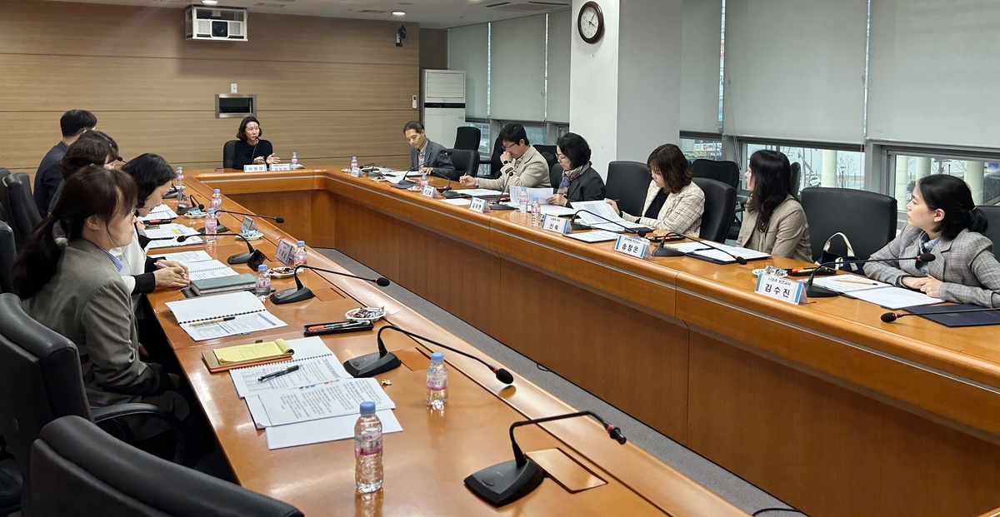

(세종=연합뉴스) 이은파 기자 = 세종시교육청은 당뇨병 학생들의 학습권과 건강권 보장을 위해 '소아·청소년 당뇨병 환자 지원위원회'를 구성하고 본격적인 활동에 들어갔다고 4일 밝혔다. 소아·청소년 당뇨병 환자 지원위는 세종교육청 기획조정국장과 학교안전과장, 세종시보건소장, 대형병원 소아청소년과 교수, 학교 교사, 당뇨 학생 학부모 등 11명으로 구성됐다. 환자 지원위는 당뇨병 학생·학부모 의견 수렴과 정책 지원에 대한 검토 등 지원 방안에 대해 긴밀히 논의하는 역할을 하게 된다.
 지원위는 전날 열린 회의에서 ▲ 교내 건강증진협의체 구성 ▲ 당뇨 학생 개별 계획수립 등 지원체계 구축 ▲ 담당자 연수와 학교 방문 상담 등 학교 구성원 역량 강화 ▲ 상담지원과 학부모 자조 모임 등 맞춤형 프로그램 지원 등 지원위 운영 활성화 방안을 논의했다.이주희 기획조정국장은 "최근 증가세를 보이는 소아·청소년 당뇨병 환자를 꼼꼼하게 돕기 위해 위원회를 구성해 운영하게 됐다"며 "모든 학생이 행복한 학교생활을 할 수 있도록 최선을 다해 돕겠다"고 말했다.지원위는 전날 열린 회의에서 ▲ 교내 건강증진협의체 구성 ▲ 당뇨 학생 개별 계획수립 등 지원체계 구축 ▲ 담당자 연수와 학교 방문 상담 등 학교 구성원 역량 강화 ▲ 상담지원과 학부모 자조 모임 등 맞춤형 프로그램 지원 등 지원위 운영 활성화 방안을 논의했다.이주희 기획조정국장은 "최근 증가세를 보이는 소아·청소년 당뇨병 환자를 꼼꼼하게 돕기 위해 위원회를 구성해 운영하게 됐다"며 "모든 학생이 행복한 학교생활을 할 수 있도록 최선을 다해 돕겠다"고 말했다.지원위는 전날 열린 회의에서 ▲ 교내 건강증진협의체 구성 ▲ 당뇨 학생 개별 계획수립 등 지원체계 구축 ▲ 담당자 연수와 학교 방문 상담 등 학교 구성원 역량 강화 ▲ 상담지원과 학부모 자조 모임 등 맞춤형 프로그램 지원 등 지원위 운영 활성화 방안을 논의했다.이주희 기획조정국장은 "최근 증가세를 보이는 소아·청소년 당뇨병 환자를 꼼꼼하게 돕기 위해 위원회를 구성해 운영하게 됐다"며 "모든 학생이 행복한 학교생활을 할 수 있도록 최선을 다해 돕겠다"고 말했다.지원위는 전날 열린 회의에서 ▲ 교내 건강증진협의체 구성 ▲ 당뇨 학생 개별 계획수립 등 지원체계 구축 ▲ 담당자 연수와 학교 방문 상담 등 학교 구성원 역량 강화 ▲ 상담지원과 학부모 자조 모임 등 맞춤형 프로그램 지원 등 지원위 운영 활성화 방안을 논의했다.이주희 기획조정국장은 "최근 증가세를 보이는 소아·청소년 당뇨병 환자를 꼼꼼하게 돕기 위해 위원회를 구성해 운영하게 됐다"며 "모든 학생이 행복한 학교생활을 할 수 있도록 최선을 다해 돕겠다"고 말했다.